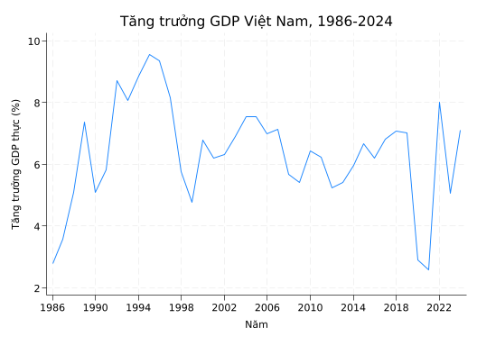

Tuần 1 — Giới thiệu môn học và bản chất quản lý kinh tế
Đối tượng, phương pháp, vai trò; vị trí trong hệ thống khoa học quản lý
Published
1 tháng 9, 2026
Note🎯 Mục tiêu bài học
Sau bài này, sinh viên có khả năng:
Trình bày được định nghĩa, đối tượng và phương pháp nghiên cứu của môn Nguyên lý Quản lý Kinh tế.
Phân biệt quản lý kinh tế với các môn liên quan: kinh tế học, quản trị kinh doanh, quản lý nhà nước.
Giải thích vì sao QLKT vừa mang tính khoa học vừa mang tính nghệ thuật.
Mô tả cấu trúc 15 tuần của môn học và yêu cầu đối với sinh viên.
1.1 Quản lý kinh tế là gì?
Định nghĩa
Quản lý kinh tế là quá trình tác động có ý thức, có tổ chức và có hướng đích của chủ thể quản lý lên đối tượng bị quản lý — tức là các hoạt động kinh tế và các nguồn lực kinh tế — nhằm đạt được những mục tiêu kinh tế và xã hội nhất định trong những điều kiện môi trường cụ thể.
Định nghĩa này gồm năm thành tố cần ghi nhớ:
Chủ thể quản lý — người ra quyết định (cá nhân, tập thể, tổ chức, Nhà nước).
Đối tượng quản lý — hoạt động kinh tế và các nguồn lực (nhân lực, vốn, tài nguyên, công nghệ).
Mục tiêu — kết quả kinh tế và xã hội mong muốn.
Công cụ và phương pháp — cách thức tác động.
Môi trường — bối cảnh kinh tế, chính trị, xã hội, công nghệ.
Khác biệt với các môn liên quan
Môn học
Trọng tâm
Câu hỏi điển hình
Kinh tế học
Mô tả và giải thích các quy luật kinh tế
Vì sao giá tăng khi cầu vượt cung?
Quản trị kinh doanh
Quản lý ở cấp doanh nghiệp
Làm sao tối đa hóa lợi nhuận của doanh nghiệp X?
Quản lý nhà nước về kinh tế
Vai trò Nhà nước trong điều tiết
Chính sách nào giúp ổn định lạm phát?
Nguyên lý QLKT
Khung lý luận tổng quát về quản lý các hoạt động kinh tế ở mọi cấp
Quản lý kinh tế phải dựa trên những nguyên tắc nào?
QLKT nằm ở vị trí cầu nối: lấy các quy luật từ kinh tế học làm nền, nhưng quan tâm đến việc vận dụng các quy luật đó để quản lý — gần với khoa học quản lý hơn là khoa học mô tả.
1.2 Đối tượng và phương pháp nghiên cứu
Đối tượng nghiên cứu
Đối tượng nghiên cứu của môn Nguyên lý QLKT là các quy luật, nguyên tắc, chức năng, phương pháp và công cụ trong quản lý các quá trình kinh tế ở tầm vĩ mô và trung mô, đặc biệt là:
Mối quan hệ giữa chủ thể quản lý (Nhà nước, các tổ chức) và đối tượng quản lý (nền kinh tế, các ngành, các vùng).
Hệ thống công cụ điều tiết kinh tế (chính sách, pháp luật, kế hoạch, đòn bẩy kinh tế).
Quá trình ra quyết định kinh tế ở các cấp.
Phương pháp nghiên cứu
Môn học sử dụng tổng hợp ba nhóm phương pháp:
Phương pháp duy vật biện chứng và duy vật lịch sử — đặt vấn đề quản lý kinh tế trong bối cảnh lịch sử cụ thể, thấy rõ tính phát triển và mâu thuẫn.
Phương pháp trừu tượng hóa khoa học — gạt bỏ những yếu tố ngẫu nhiên để rút ra bản chất chung.
Phương pháp định lượng và mô hình hóa — sử dụng số liệu thống kê, phân tích kinh tế lượng cơ bản.
Tip💡 Trong môn này
Chúng ta sẽ sử dụng Stata ở những tuần có nội dung định lượng. Sinh viên không cần là chuyên gia Stata — chỉ cần đọc hiểu được code và biết tự chạy lại được các ví dụ.
1.3 Vai trò của QLKT trong khoa học và thực tiễn
Vai trò khoa học
QLKT đóng vai trò hợp lưu giữa khoa học quản lý và khoa học kinh tế:
Cung cấp khung phân tích chung cho mọi nghiên cứu sâu hơn về quản lý ngành, quản lý vùng, quản lý dự án.
Đặt nền tảng tư duy hệ thống cho người làm chính sách và quản lý.
Vai trò thực tiễn
Đối với một sinh viên kinh tế năm 3–4, môn này có ba giá trị thực tiễn:
Đọc hiểu chính sách. Sau môn học, bạn có thể đọc một thông tư hay một đề án chính sách và hiểu vì sao nó được thiết kế như vậy.
Tư duy hệ thống. Khi đứng trước một vấn đề thực tế, biết phân biệt đâu là vấn đề của quy luật (không thể đổi), đâu là vấn đề của cách quản lý (có thể đổi).
Nền cho các môn sau. Quản lý ngân sách, Quản lý dự án công, Phân tích chính sách — tất cả đều dựa trên khung của môn này.
1.4 Tính khoa học và tính nghệ thuật
Một câu hỏi cổ điển: Quản lý là khoa học hay nghệ thuật? Trả lời: cả hai.
Tính khoa học
Dựa trên quy luật khách quan (cung-cầu, giá trị, năng suất…).
Có hệ thống khái niệm, nguyên tắc, phương pháp được kiểm chứng.
Có thể học, truyền đạt và đo lường được phần lớn.
Tính nghệ thuật
Vận dụng quy luật vào hoàn cảnh cụ thể — đòi hỏi phán đoán.
Bao gồm trực giác, kinh nghiệm, và cảm nhận về con người.
Không thể truyền đạt hết bằng sách vở — cần thực hành.
Một nhà quản lý kinh tế giỏi phải có cả hai. Học sách giúp bạn không phạm sai lầm cơ bản. Kinh nghiệm giúp bạn ra quyết định đúng trong hoàn cảnh khó.
1.5 Ví dụ minh họa với dữ liệu Việt Nam
Để cảm nhận quy mô và động thái của nền kinh tế Việt Nam — đối tượng quản lý chính của môn này — hãy nhìn vào dữ liệu GDP thực tế từ Đổi mới (1986) đến nay.
Note📊 Stata exercise — chạy thử ở nhà
Tải bộ dữ liệu vn_gdp_1986_2024.csv từ thư mục data/ (sẽ phát ở tuần này). Chạy lệnh sau:
* Đọc dữ liệu GDP thực tế Việt Nam 1986-2024import delimited "../data/vn_gdp_1986_2024.csv", clearcase(lower)* Khai báo dữ liệu chuỗi thời giantssetyear* Tóm tắtsummarize gdp_growth* Vẽ biểu đồ tăng trưởng GDP qua các giai đoạntwoway (line gdp_growth year), ///title("Tăng trưởng GDP Việt Nam, 1986-2024") ///ytitle("Tăng trưởng GDP thực (%)") ///xtitle("Năm") ///xlabel(1986(4)2024) ///yline(0, lcolor(red))* Tính tăng trưởng trung bình từng giai đoạngen period = .replace period = 1 ifyear >= 1986 & year <= 1996 // Đầu Đổi mớireplace period = 2 ifyear >= 1997 & year <= 2006 // Hậu khủng hoảng châu Áreplace period = 3 ifyear >= 2007 & year <= 2019 // Gia nhập WTOreplace period = 4 ifyear >= 2020 & year <= 2024 // Covid và phục hồilabeldefinep 1 "1986-1996 Đầu Đổi mới"/// 2 "1997-2006 Hậu KH châu Á"/// 3 "2007-2019 Gia nhập WTO"/// 4 "2020-2024 Covid + phục hồi"labelvalues period ptabstat gdp_growth, by(period) stat(meansdminmax n) format(%6.2f)
. * Đọc dữ liệu GDP thực tế Việt Nam 1986-2024
. import delimited "../data/vn_gdp_1986_2024.csv", clear case(lower)
(encoding automatically selected: UTF-8)
(3 vars, 39 obs)
.
. * Khai báo dữ liệu chuỗi thời gian
. tsset year
Time variable: year, 1986 to 2024
Delta: 1 unit
.
. * Tóm tắt
. summarize gdp_growth
Variable | Obs Mean Std. dev. Min Max
-------------+---------------------------------------------------------
gdp_growth | 39 6.362564 1.662904 2.58 9.54
.
. * Vẽ biểu đồ tăng trưởng GDP qua các giai đoạn
. twoway (line gdp_growth year), ///
> title("Tăng trưởng GDP Việt Nam, 1986-2024") ///
> ytitle("Tăng trưởng GDP thực (%)") ///
> xtitle("Năm") ///
> xlabel(1986(4)2024) ///
> yline(0, lcolor(red))
.
. * Tính tăng trưởng trung bình từng giai đoạn
. gen period = .
(39 missing values generated)
. replace period = 1 if year >= 1986 & year <= 1996 // Đầu Đổi mới
(11 real changes made)
. replace period = 2 if year >= 1997 & year <= 2006 // Hậu khủng hoảng châu Á
(10 real changes made)
. replace period = 3 if year >= 2007 & year <= 2019 // Gia nhập WTO
(13 real changes made)
. replace period = 4 if year >= 2020 & year <= 2024 // Covid và phục hồi
(5 real changes made)
.
. label define p 1 "1986-1996 Đầu Đổi mới" ///
> 2 "1997-2006 Hậu KH châu Á" ///
> 3 "2007-2019 Gia nhập WTO" ///
> 4 "2020-2024 Covid + phục hồi"
. label values period p
.
. tabstat gdp_growth, by(period) stat(mean sd min max n) format(%6.2f)
Summary for variables: gdp_growth
Group variable: period
period | Mean SD Min Max N
-----------------+--------------------------------------------------
1986-1996 Đầu Đổ | 6.75 2.38 2.79 9.54 11.00
1997-2006 Hậu KH | 6.70 0.98 4.77 8.15 10.00
2007-2019 Gia nh | 6.25 0.67 5.25 7.13 13.00
2020-2024 Covid | 5.13 2.43 2.58 8.02 5.00
-----------------+--------------------------------------------------
Total | 6.36 1.66 2.58 9.54 39.00
--------------------------------------------------------------------
.

Quan sát điển hình (sẽ thảo luận trên lớp):
Giai đoạn nào tăng trưởng cao nhất? Vì sao?
Có sự kiện chính sách hoặc cú sốc bên ngoài nào ứng với từng giai đoạn?
Tăng trưởng có chậm lại theo thời gian không? Nếu có, đó là vấn đề quản lý hay vấn đề quy luật (mức GDP đầu người đã cao hơn)?
Kiểm tra giữa kỳ tuần 8, thuyết trình nhóm tuần 15, thi cuối kỳ.
Warning⚠️ Khuyến nghị thực tế
Môn này nhiều khái niệm trừu tượng. Nếu chỉ “học thuộc” sẽ rất khó nhớ và khó dùng. Hãy:
Đọc trước mỗi buổi — đừng đến lớp với đầu trống.
Liên hệ thực tế — mỗi khái niệm thử nghĩ ra 1 ví dụ Việt Nam đương đại.
Đặt câu hỏi — không hiểu thì hỏi ngay, đừng đợi đến kiểm tra.
1.7 Tự kiểm tra
Câu hỏi tự luận ngắn
Phân biệt quản lý kinh tế với quản trị kinh doanh. Đưa ra một ví dụ cho mỗi loại.
Tại sao nói quản lý kinh tế vừa là khoa học vừa là nghệ thuật? Liệt kê 2 ví dụ cho mỗi vế.
Vai trò của môn Nguyên lý QLKT với người sẽ làm việc tại cơ quan nhà nước về kinh tế là gì?
Bài tập nhỏ
Chọn một chính sách kinh tế gần đây của Việt Nam (vd: gói hỗ trợ Covid 2021, giảm thuế VAT 2024, v.v.) — phân tích bằng năm thành tố của quản lý kinh tế (chủ thể, đối tượng, mục tiêu, công cụ, môi trường). Viết ngắn 300–400 từ.
Đọc thêm
Đỗ Hoàng Toàn, Mai Văn Bưu (chủ biên). Giáo trình Quản lý kinh tế, Chương 1.
Acemoglu, D., & Robinson, J. A. (2012). Why Nations Fail, Chương 3: “The making of prosperity and poverty”.
Văn kiện Đại hội Đảng XIII, mục III.2: “Hoàn thiện toàn diện, đồng bộ thể chế phát triển nền kinh tế thị trường định hướng XHCN”.